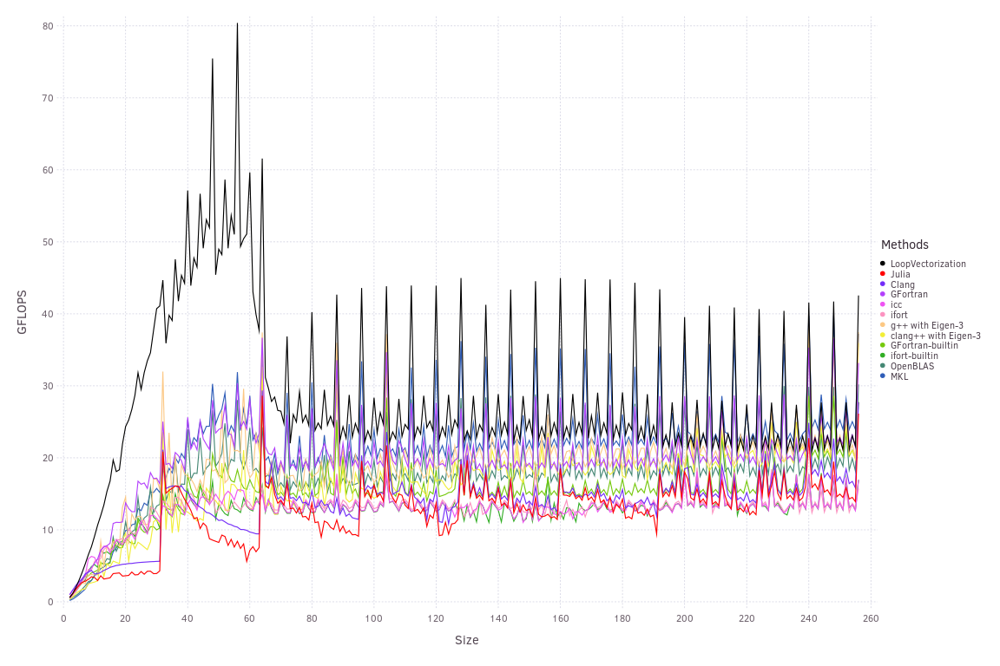

Matrix-Vector Operations
Here I'll discuss a variety of Matrix-vector operations, naturally starting with matrix-vector multiplication.
function jgemvavx!(𝐲, 𝐀, 𝐱)
@avx for i ∈ eachindex(𝐲)
𝐲i = zero(eltype(𝐲))
for j ∈ eachindex(𝐱)
𝐲i += 𝐀[i,j] * 𝐱[j]
end
𝐲[i] = 𝐲i
end
endUsing a square Size x Size matrix 𝐀, we find the following results. 
If 𝐀 is transposed, or equivalently, if we're instead computing x * 𝐀: 
Finally, the three-argument dot product y' * 𝐀 * x: 
The performance impact of alignment is dramatic here.